Utilisateurs, techniciens et administrateurs fonctionnels
Parqueo — documentation fonctionnelle
Ce que fait le logiciel, écran par écran. Public visé : les utilisateurs, les techniciens et les administrateurs fonctionnels.
- 1. À quoi sert Parqueo
- 2. Les trois rôles
- 3. Se connecter
- 4. Le tableau de bord
- 5. Créer une demande
- 6. Suivre et traiter un ticket
- 7. Le cycle de vie d'un ticket
- 8. La base de connaissances
- 9. L'inventaire du parc
- 10. L'administration
- 11. Les workflows
- 12. Les paramètres
- 13. Les emails
- 14. Questions fréquentes
1. À quoi sert Parqueo#
Parqueo réunit quatre usages d'un service informatique dans une seule application :
- le ticketing — recevoir, suivre et clôturer les demandes ;
- la gestion de parc — savoir quel matériel existe, où il est, qui l'utilise et ce qu'il a subi ;
- le catalogue de demandes — des formulaires guidés pour les demandes récurrentes, plutôt que du texte libre ;
- l'automatisation — des workflows visuels qui appliquent vos procédures à chaque ticket, sans intervention.
Tout est installé sur vos serveurs : aucune donnée ne transite par un service tiers.
2. Les trois rôles#
| Rôle | Pour qui | Ce qu'il voit et fait |
|---|---|---|
| Utilisateur | tout le personnel | crée des demandes, suit les siennes, répond aux messages, consulte la base de connaissances |
| Technicien | l'équipe informatique | voit les tickets qu'il a ouverts, qui lui sont assignés, non assignés, ou portés par son équipe ; les traite, les assigne, gère l'inventaire |
| Administrateur | responsable du service | tout, plus la gestion des comptes, équipes, catégories, formulaires, workflows et paramètres |
Trois précisions qui reviennent souvent :
- Un technicien ne voit pas tous les tickets. Il voit ceux qu'il a ouverts, ceux qui lui sont assignés, ceux de son équipe, et ceux que personne n'a encore pris. Un ticket assigné à un technicien d'une autre équipe lui est invisible — sauf s'il en est l'auteur : on ne perd jamais de vue sa propre demande.
- Un utilisateur ne voit que ses propres demandes, jamais celles de ses collègues, même dans la même catégorie.
- Un changement de rôle ne prend effet qu'à la reconnexion. Si vous promouvez quelqu'un pendant qu'il travaille, demandez-lui de se déconnecter et de se reconnecter.
3. Se connecter#
Deux modes cohabitent :
- Compte local — email et mot de passe créés par un administrateur.
- Microsoft Entra ID (SSO) — bouton « Se connecter avec Microsoft », visible seulement si l'administrateur a configuré le SSO. Le compte est créé automatiquement à la première connexion, avec le rôle Utilisateur.
Un compte créé par SSO n'a pas de mot de passe local : le formulaire classique le refuse et invite à passer par Microsoft.
La session dure 7 jours, puis il faut se reconnecter. Quand elle expire, Parqueo vous ramène à l'écran de connexion en l'expliquant, au lieu d'afficher des pages vides.
Changer son mot de passe : cliquez sur votre nom en bas de la barre latérale (« Mon compte »), section Mot de passe. Il faut saisir l'ancien mot de passe, et le nouveau fait 8 caractères minimum. Les comptes Microsoft n'ont pas de mot de passe local : ils le changent côté Microsoft.
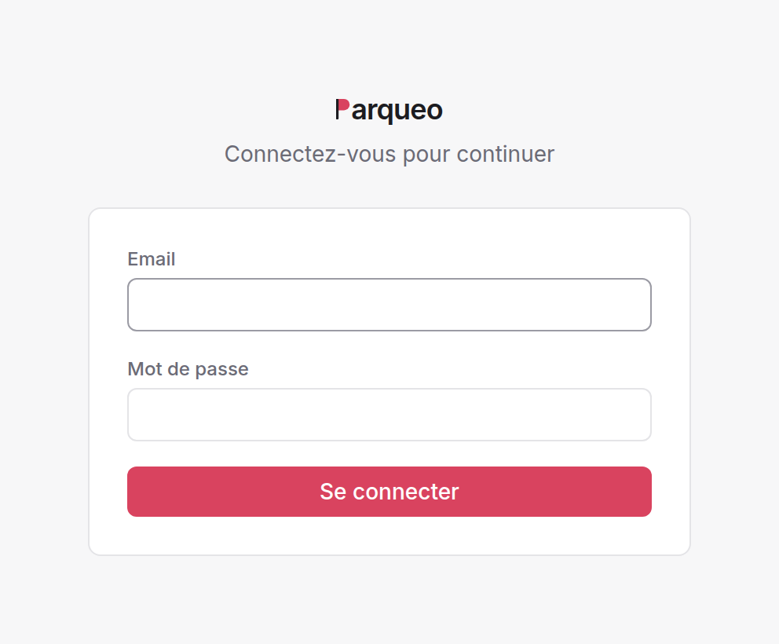
4. Le tableau de bord#
C'est la page d'accueil. Elle est modulaire : une grille de widgets que l'administrateur compose par rôle. Utilisateurs, techniciens et administrateurs peuvent donc avoir trois tableaux de bord différents.
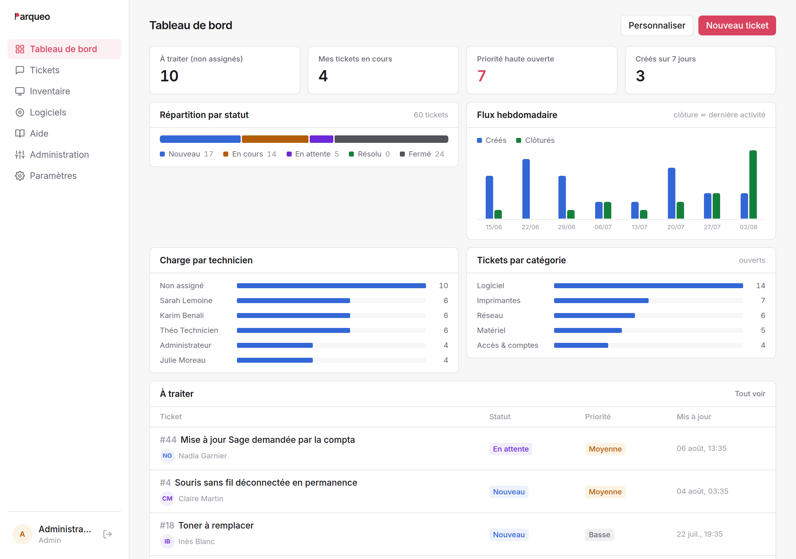
4.1 Widgets disponibles#
| Widget | Contenu |
|---|---|
| Tuile de stat | un chiffre clé, cliquable vers la liste filtrée correspondante |
| Donut | répartition par statut, catégorie, priorité, ou état du parc |
| Répartition par statut | barre segmentée des tickets |
| Flux hebdomadaire | tickets créés vs clôturés, sur 4, 8 ou 12 semaines |
| Tickets par catégorie | volume par catégorie (ouverts, ou tous) |
| Tickets par priorité | volume des tickets ouverts par priorité |
| Charge par technicien | tickets ouverts par assigné (staff) |
| Charge par équipe | tickets ouverts par équipe (staff) |
| Âge des tickets ouverts | depuis combien de temps ils attendent |
| Actifs par type | répartition de l'inventaire |
| État du parc | barre segmentée des actifs |
| Liste de tickets | liste filtrée : à traiter, assignés à moi, mes demandes, priorité haute, activité récente |
| Liste d'actifs | actifs récents ou en réparation |
4.2 Métriques des tuiles#
Tickets ouverts, nouveaux tickets, à traiter (non assignés) (staff), mes tickets en cours (staff), priorité haute ouverte, en attente, résolus, créés sur 7 jours, clôturés sur 7 jours, mes tickets ouverts, actifs, actifs en réparation.
Les métriques marquées (staff) n'apparaissent pas pour les utilisateurs.
4.3 Personnalisation#
Par défaut, chacun voit le tableau de bord de son rôle, tel que l'administration l'a défini. Celle-ci peut autoriser la personnalisation séparément pour les techniciens et pour les utilisateurs (voir §12). Un tableau de bord personnalisé est enregistré sur le compte, pas sur le navigateur : on le retrouve à l'identique depuis un autre poste, et un bouton permet de revenir au tableau de bord du rôle.
5. Créer une demande#
Bouton Nouvelle demande. Trois portes d'entrée.
5.1 Le catalogue de demandes#
La page présente les formulaires publiés par l'administration : « Demande d'accès », « Nouveau matériel », « Départ d'un collaborateur »… Chaque formulaire pose ses propres questions, et impose d'avance la catégorie et la priorité du ticket. C'est la voie à privilégier pour tout ce qui est récurrent : les informations utiles sont collectées du premier coup.
Types de champs possibles : texte court, texte long, liste de choix, date, case à cocher. Un champ peut être obligatoire.
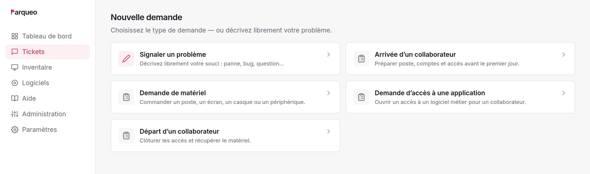
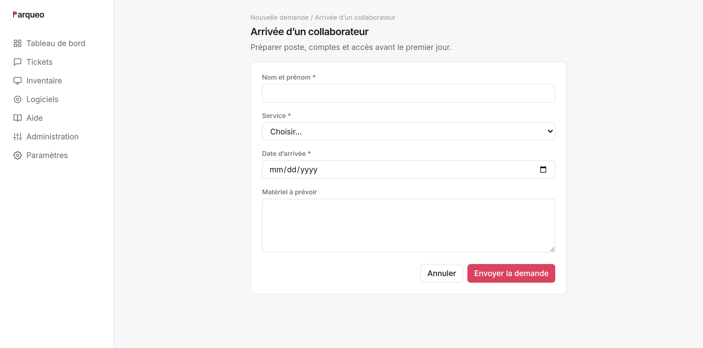
5.2 La demande libre#
Pour ce qui n'entre dans aucune case : titre, description, catégorie, et éventuellement priorité et matériel concerné.
Suggestions automatiques : dès que le titre fait quatre caractères, Parqueo propose jusqu'à trois articles de la base de connaissances susceptibles de répondre. Beaucoup de demandes s'arrêtent là — c'est l'objectif. (Cette suggestion est débrayable.)
Choix de la priorité : les utilisateurs peuvent ou non fixer la priorité, selon un paramètre. Sinon, la priorité par défaut s'applique.
Matériel concerné : un utilisateur peut rattacher un de ses actifs à sa demande. L'historique du matériel se construit alors tout seul.
5.3 Par email#
Si le collecteur email est activé, il suffit d'écrire à l'adresse du support : le message devient un ticket, pièces jointes comprises.
Deux règles :
- l'expéditeur doit avoir un compte Parqueo — un email venant d'une adresse inconnue est ignoré ;
- répondre à une notification ajoute un message au ticket plutôt que d'en
créer un nouveau, tant que le sujet contient
Ticket #n. La citation du message précédent est retirée automatiquement.
6. Suivre et traiter un ticket#
6.1 La liste des tickets#
Filtres : statut (pastilles avec compteurs), priorité, assigné (dont « non assigné »), catégorie, équipe, et recherche libre dans le titre et la description.
Tri par clic sur l'en-tête de colonne (numéro, statut, priorité, catégorie, assigné, dernière activité), ou par présélection : activité récente, plus anciens, priorité haute d'abord.
Pagination réglable : 10, 25, 50, 100, 500, ou tout afficher.
Les compteurs des pastilles tiennent compte de tous vos autres filtres mais pas du filtre de statut : ils affichent donc toujours la répartition complète.
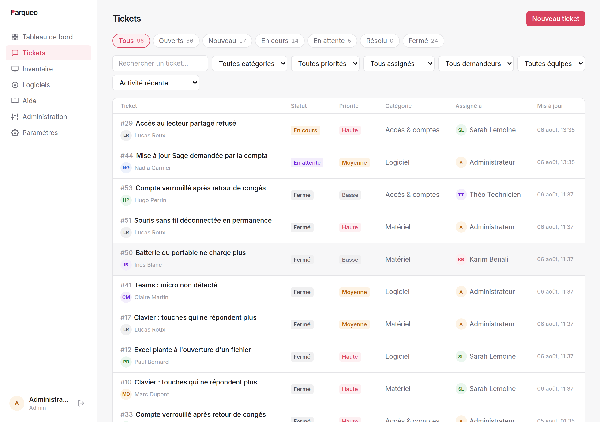
6.2 Le détail d'un ticket#
Le fil. Description initiale, messages, pièces jointes et journal d'événements sur une seule chronologie. Chaque changement de statut, de priorité, d'assignation ou d'équipe y laisse une trace horodatée et nominative — y compris quand l'auteur du changement est un workflow, qui est nommé explicitement (« Affecté à l'équipe Support N1 (workflow « Incident réseau ») »).
Les pièces jointes. 10 Mo maximum par fichier ; images, PDF, documents bureautiques, archives, journaux, CSV. Les images s'affichent en vignette directement dans le fil.
Le panneau latéral (techniciens et administrateurs) : statut, priorité, assigné, équipe, catégorie, matériel concerné. Chaque modification est immédiate et journalisée.
L'état des workflows. Si un workflow retient le ticket, le panneau l'indique en clair : « en attente de prise en charge », « en attente du statut « Résolu » ». On sait donc toujours pourquoi un ticket ne bouge pas.
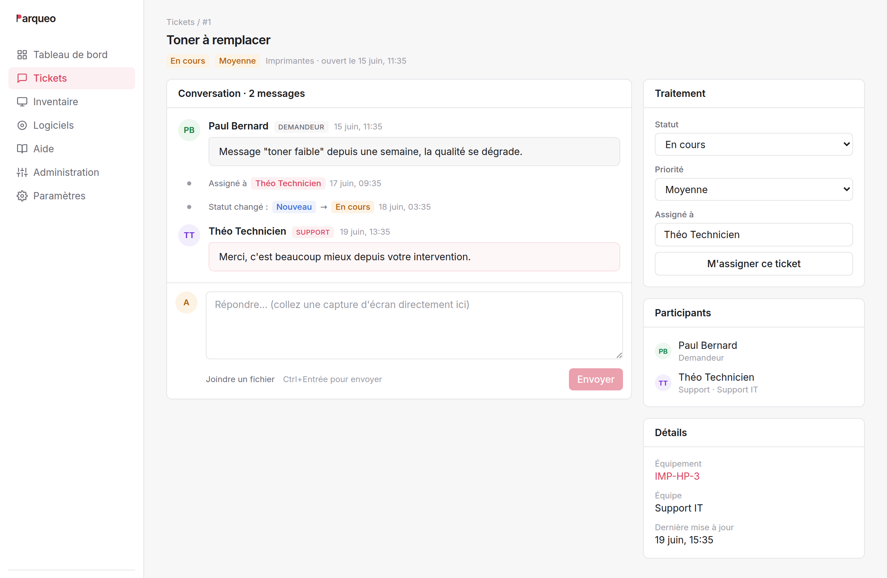
6.3 Qui peut faire quoi#
| Action | Utilisateur | Technicien | Admin |
|---|---|---|---|
| Créer une demande | ✅ | ✅ | ✅ |
| Commenter un ticket visible | ✅ | ✅ | ✅ |
| Joindre un fichier | ✅ | ✅ | ✅ |
| Changer statut / priorité / assigné / équipe | ❌ | ✅ | ✅ |
| Modifier titre et description | ❌ | ✅ | ✅ |
| Voir les tickets des autres | ❌ | partiel | ✅ |
7. Le cycle de vie d'un ticket#
Nouveau ──► En cours ──► En attente ──► Résolu ──► Fermé
│ ▲
└─────────┘
clôture automatique
| Statut | Sens |
|---|---|
| Nouveau | reçu, personne ne l'a encore pris |
| En cours | un technicien travaille dessus |
| En attente | bloqué : réponse du demandeur, pièce à commander, tiers |
| Résolu | traité, en attente de confirmation |
| Fermé | terminé |
Les statuts ne sont pas contraints : n'importe quel passage est possible, et chacun est journalisé.
Priorités : basse, moyenne, haute.
Clôture automatique. Un ticket Résolu sans nouvelle activité pendant le délai configuré (7 jours par défaut) passe automatiquement en Fermé, avec une ligne de journal explicite. Le délai est réglable, et la fonction peut être désactivée. Finie la file encombrée de tickets terminés que personne n'ose fermer.
Enquête de satisfaction. Au passage en Résolu, l'email envoyé au demandeur contient deux liens : 👍 et 👎. Un clic suffit, sans se reconnecter. Le lien reste valable 30 jours et ne compte qu'un seul vote par ticket.
8. La base de connaissances#
Menu Aide. Des articles courts, rattachés à une catégorie, avec recherche plein texte sur le titre et le contenu.
Deux usages :
- La consultation directe — l'utilisateur cherche avant de demander.
- La suggestion à la création — pendant la saisie d'une demande libre, Parqueo propose les articles correspondants. C'est le levier principal de réduction du volume de tickets.
Rédaction : les administrateurs toujours, les techniciens si le paramètre correspondant est actif. Un article peut être un brouillon (non publié) : il reste visible du staff, invisible des utilisateurs.
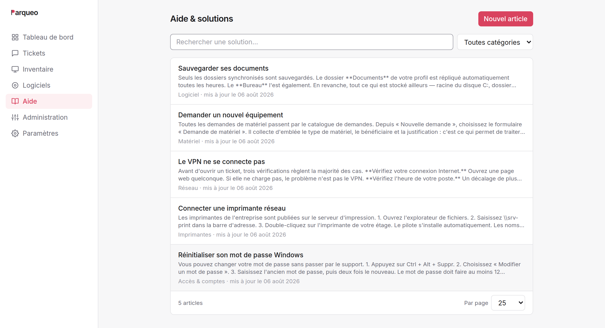
9. L'inventaire du parc#
Menu Inventaire. Quatre types d'actifs : PC, imprimante, serveur, logiciel.
Chaque actif porte un nom, un type, un emplacement, une date d'achat, un état (en service, en réparation, retiré) et un utilisateur assigné.
Fiche d'un actif : ses caractéristiques et l'historique des tickets qui le concernent — c'est ce qui permet de repérer le poste qui tombe en panne tous les deux mois.
Qui voit quoi : les techniciens et administrateurs voient tout l'inventaire ; un utilisateur ne voit que le matériel qui lui est assigné, et l'accès peut lui être coupé entièrement par un paramètre.
Création et modification : techniciens et administrateurs. Suppression : administrateurs seulement — et un actif référencé par des tickets ne peut pas être supprimé. Passez-le en retiré : l'historique reste consultable.
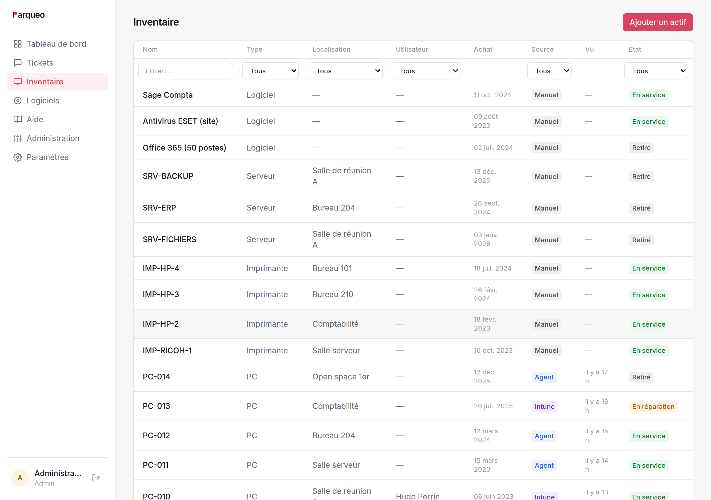
L'inventaire automatique#
Plutôt que tout saisir, le parc peut remonter tout seul. Trois moyens, combinables, mis en place par l'administrateur (voir la documentation d'installation §6) :
- Script ou agent GLPI sur les postes : ils envoient leur configuration (matériel, système, logiciels installés) à Parqueo.
- Connecteur Microsoft Intune : les appareils déjà gérés dans Intune sont récupérés sans rien installer, avec leur utilisateur.
- Scan réseau SNMP : les équipements sans agent (imprimantes, switches, NAS…) sont découverts en interrogeant le réseau.
Un actif remonté automatiquement porte alors, en plus, une source (Agent, Intune, Scan) et une date de dernière remontée. Sa fiche affiche un bloc Matériel (système, processeur, mémoire, stockage) et la liste des logiciels installés. Les champs que vous renseignez à la main (nom, emplacement, état, utilisateur assigné) sont respectés : une remontée suivante ne les écrase jamais.
Actifs périmés. Un équipement automatique qui cesse de remonter est signalé en rouge (« Vu il y a 45 j ⚠ ») au-delà d'un délai réglable (Paramètres → Inventaire). C'est un simple repère : le statut n'est pas modifié. Un actif longtemps silencieux (éteint, retiré, agent en panne) est un bon candidat à passer manuellement en « retiré ».
La page Logiciels#
Menu Logiciels (techniciens et administrateurs) : le catalogue de tous les logiciels du parc, avec le nombre de postes où chacun est installé. Sélectionner un logiciel liste les machines concernées et leur version — la base d'un suivi de licences ou de la chasse aux versions obsolètes.
10. L'administration#
Menu Administration, réservé aux administrateurs. Cinq onglets.
10.1 Utilisateurs#
Création, modification, suppression, affectation à une équipe et changement de rôle. Mot de passe : 8 caractères minimum.
Import en masse par CSV. La première ligne donne les en-têtes, avec des
alias acceptés en français : nom/name, email/e-mail/mail, role/rôle,
equipe/équipe/team, mot de passe/mdp/password. L'équipe peut être
désignée par son nom.
nom,email,rôle,équipe
Marc Dupont,marc.dupont@exemple.fr,user,
Sarah Lemoine,sarah.lemoine@exemple.fr,technician,Support IT
1000 lignes maximum. Chaque ligne est traitée indépendamment : le rapport indique les comptes créés, ignorés (déjà présents, ou en double dans le fichier) et en erreur. Quand aucun mot de passe n'est fourni, Parqueo en génère un et l'affiche dans le rapport — c'est le seul moment où il est lisible. Copiez-le avant de quitter la page.
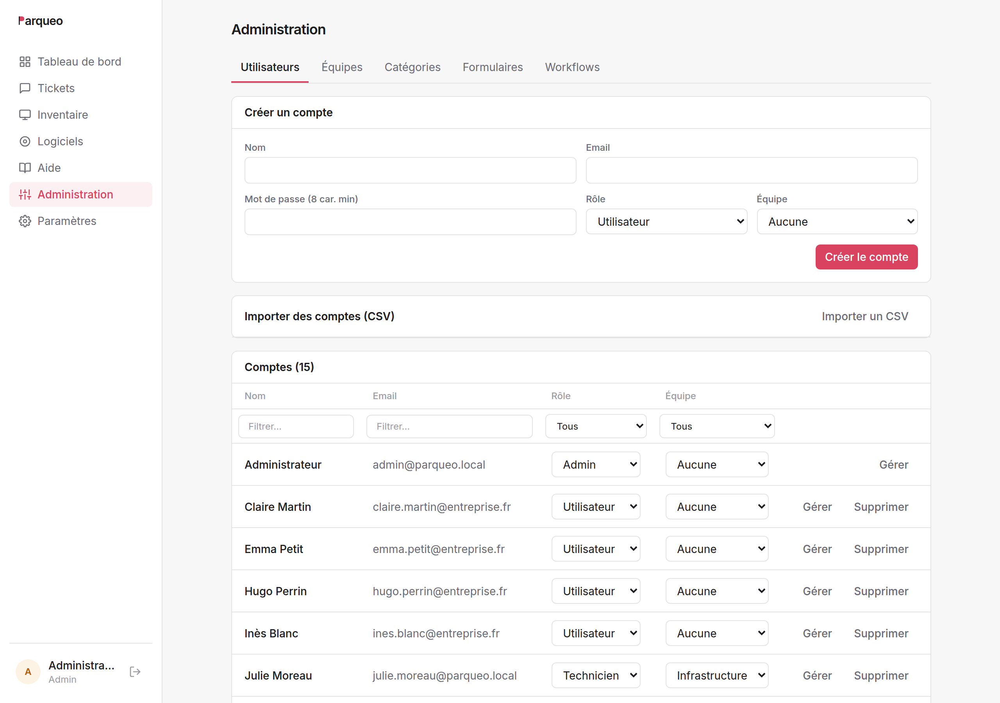
Deux garde-fous : on ne peut pas retirer son propre rôle d'administrateur, ni supprimer son propre compte. Un compte qui a écrit des tickets ou des commentaires ne peut pas être supprimé (l'historique resterait orphelin) — changez son rôle ou son mot de passe à la place.
10.2 Équipes et catégories#
Deux listes simples. Les équipes regroupent les techniciens et servent à l'affectation ; les catégories classent les tickets, les formulaires et les articles de la base de connaissances.
Choisissez les catégories avec soin : elles conditionnent les filtres, les statistiques et le ciblage des workflows.
10.3 Formulaires#
Construction du catalogue de demandes : nom, description, catégorie, priorité imposée, activation, et liste de champs ordonnée. Un champ de type liste exige au moins deux choix.
Un formulaire désactivé disparaît du catalogue sans casser les tickets déjà créés à partir de lui.
À l'édition, les champs sont remplacés en bloc. Les tickets existants ne sont pas affectés : leur contenu a été recopié dans la description à la soumission.
10.4 Workflows#
Voir §11.
11. Les workflows#
Un workflow applique une procédure à un ticket, automatiquement. Il se dessine sur un canvas : un déclencheur, des blocs, des fils entre les blocs.
11.1 Déclencheur et filtres#
Deux déclencheurs :
- Un ticket est créé ;
- Le statut change.
On restreint ensuite à ce qui compte : une catégorie, un formulaire d'origine, une priorité, ou un statut atteint. Toutes les conditions renseignées doivent être vraies. Un workflow par procédure, pas un fourre-tout.
11.2 Les blocs#
Actions — le workflow agit puis passe au bloc suivant :
| Bloc | Effet |
|---|---|
| Affecter à une équipe | pose l'équipe responsable |
| Assigner à une personne | désigne le technicien |
| Changer la priorité | |
| Changer le statut | |
| Ajouter une note | écrit dans le journal du ticket |
| Envoyer un email | au demandeur, à l'assigné, ou à une adresse fixe |
| Webhook | appelle un outil externe (n8n, Zapier, script maison) |
Condition — teste le ticket et ouvre deux chemins : la priorité, le statut, la catégorie, le formulaire d'origine, ou le fait que le ticket soit déjà pris en charge.
Attentes — le ticket se gare sur le bloc et ne repart que lorsque la condition est remplie :
| Bloc | Repart quand |
|---|---|
| Attendre la prise en charge | un technicien est assigné |
| Attendre un statut | le ticket atteint le statut choisi |
C'est ce qui sépare une simple règle d'automatisation d'une vraie procédure de service. Les blocs d'attente ne sont proposés que sur le déclencheur « ticket créé ».
11.3 Variables#
Les notes et les emails acceptent des variables entre doubles accolades :
{{ticket.id}} · {{ticket.title}} · {{ticket.description}} ·
{{ticket.status}} · {{ticket.priority}} · {{author.name}} ·
{{author.email}} · {{assignee.name}} · {{assignee.email}} ·
{{category.name}} · {{team.name}}
Une variable sans valeur est remplacée par du vide.
11.4 Exemple complet#
Procédure : incident réseau.
[Ticket créé · catégorie = Réseau]
│
▼
[Affecter à l'équipe Infrastructure]
│
▼
[Envoyer un email au demandeur]
« Votre demande {{ticket.id}} est prise en compte par le support réseau. »
│
▼
[Attendre la prise en charge] ◄── le ticket se gare ici
│
▼
[Condition : la priorité est haute ?]
oui │ │ non
▼ ▼
[Email à l'astreinte] [Ajouter une note]
« Traitement standard. »
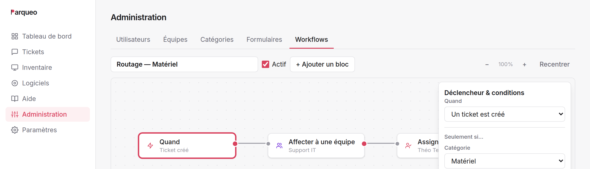
WAIT ; la condition a deux points de sortie, oui et non.À la création d'un ticket dans la catégorie Réseau : l'équipe est posée, le demandeur est prévenu, et le ticket attend. Il peut rester garé des heures. Dès qu'un technicien se l'assigne, le workflow repart tout seul au bloc suivant et évalue la condition.
11.5 Bon à savoir#
- Un ticket n'entre qu'une fois dans un workflow donné, même si l'événement se répète.
- Les actions d'un workflow ne déclenchent jamais un autre workflow. Pas de cascade, pas de boucle.
- Une action en échec est ignorée (adresse invalide, équipe supprimée) : le workflow continue, et l'échec est écrit dans les journaux du serveur.
- Un workflow inactif ne s'applique plus ; les tickets déjà garés sur un de ses blocs y restent.
- 30 blocs maximum par workflow.
- Le webhook envoie le ticket complet en JSON, avec un jeton secret optionnel en en-tête. Il n'attend pas plus de 5 secondes. C'est la porte ouverte vers le reste du système d'information : création de compte dans l'annuaire, commande de matériel, alerte dans Teams.
12. Les paramètres#
Menu Paramètres, administrateurs uniquement. Cinq sections.
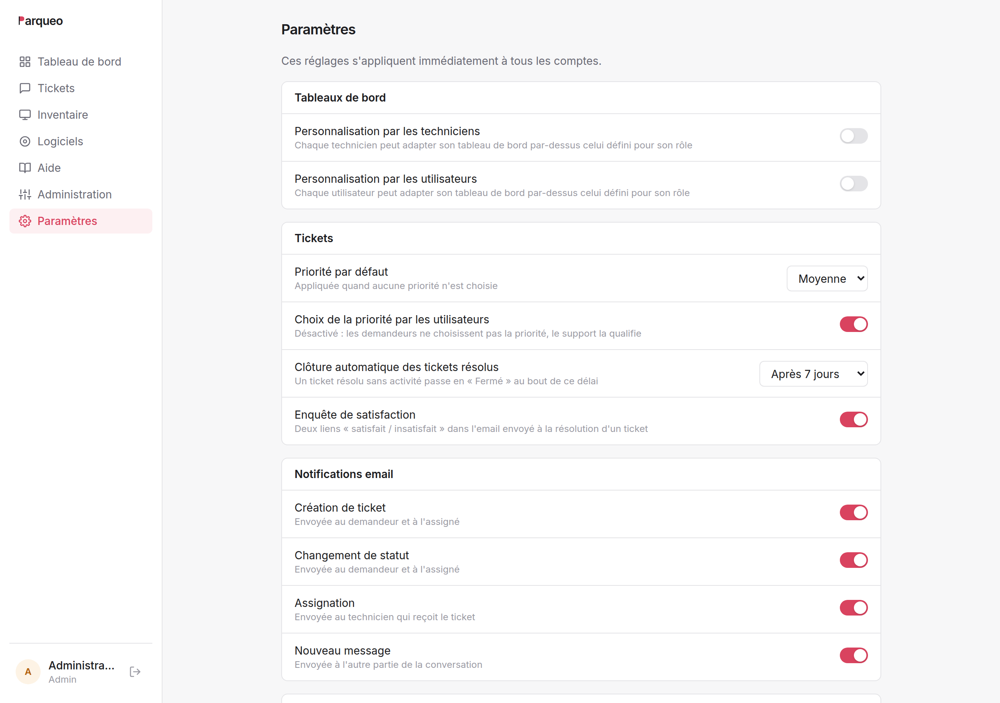
Tableaux de bord#
| Paramètre | Défaut | Effet |
|---|---|---|
| Personnalisation par les techniciens | désactivé | ils peuvent composer leur propre tableau de bord |
| Personnalisation par les utilisateurs | désactivé | idem |
Tickets#
| Paramètre | Défaut | Effet |
|---|---|---|
| Priorité par défaut | Moyenne | appliquée quand aucune priorité n'est choisie |
| Choix de la priorité par les utilisateurs | activé | sinon, la priorité par défaut s'impose |
| Clôture automatique des tickets résolus | 7 jours | 0 = désactivée |
| Enquête de satisfaction | activée | liens 👍/👎 dans l'email de résolution |
Notifications email#
| Paramètre | Destinataires |
|---|---|
| Création de ticket | demandeur et assigné |
| Changement de statut | demandeur et assigné |
| Assignation | le technicien qui reçoit le ticket |
| Nouveau message | l'autre partie de la conversation |
Base de connaissances#
| Paramètre | Défaut | Effet |
|---|---|---|
| Suggestions à la création de ticket | activées | articles proposés pendant la saisie |
| Rédaction par les techniciens | activée | sinon, les administrateurs seuls |
Inventaire#
| Paramètre | Défaut | Effet |
|---|---|---|
| Inventaire visible par les utilisateurs | activé | désactivé, le menu disparaît pour eux |
| Signaler les actifs périmés | après 30 j | délai sans remontée au-delà duquel un actif automatique est marqué en rouge (statut inchangé) |
13. Les emails#
13.1 Ce que Parqueo envoie#
| Événement | Destinataires | Contenu |
|---|---|---|
| Ticket créé | demandeur + assigné | numéro, titre, description, priorité |
| Statut changé | demandeur + assigné | ancien et nouveau statut ; liens de satisfaction si passage en Résolu |
| Ticket assigné | le technicien concerné | titre, priorité, demandeur — jamais quand on s'assigne soi-même |
| Nouveau message | l'autre partie | auteur et contenu — jamais à l'auteur du message |
Chacune de ces notifications est désactivable indépendamment.
13.2 Ce que Parqueo reçoit#
Si le collecteur est activé, l'adresse du support devient une porte d'entrée à part entière : un email crée un ticket, une réponse à une notification ajoute un message. Voir §5.3.
Une réponse n'atterrit dans le ticket cité que si son expéditeur y a accès dans l'interface. Sinon elle n'est pas perdue : elle devient une nouvelle demande. Les mêmes règles de visibilité s'appliquent donc par email et à l'écran.
14. Questions fréquentes#
Un technicien me dit qu'il ne voit pas un ticket. Il est probablement assigné à un technicien d'une autre équipe. Un technicien voit ses tickets, ceux de son équipe et ceux qui ne sont assignés à personne. Réassignez-le, ou passez par un compte administrateur.
J'ai changé le rôle de quelqu'un, sans effet. Le rôle est figé dans la session. Il faut se déconnecter et se reconnecter.
Un ticket ne bouge plus, sans raison apparente. Regardez le panneau latéral : un workflow le retient probablement sur un bloc d'attente, et l'écran l'indique en clair.
Je n'arrive pas à supprimer un utilisateur. Il a écrit des tickets ou des commentaires ; les supprimer laisserait l'historique orphelin. Changez son rôle ou son mot de passe pour lui couper l'accès.
Je n'arrive pas à supprimer un actif. Des tickets le référencent. Passez-le en retiré : il disparaît des listes courantes et l'historique reste consultable.
Personne ne reçoit d'email. Le serveur SMTP n'est probablement pas configuré. Sans lui, Parqueo fonctionne normalement mais n'envoie rien — voyez avec la personne qui administre le serveur.
Un email envoyé au support n'a pas créé de ticket. L'expéditeur doit avoir un compte Parqueo. Les adresses inconnues sont ignorées pour éviter les tickets indésirables.
Les tickets résolus se ferment tout seuls. C'est la clôture automatique, après le délai configuré sans activité. Réglable et désactivable dans Paramètres.
Puis-je récupérer un mot de passe généré à l'import ? Non. Il n'est affiché qu'une fois, dans le rapport d'import. Ensuite, l'intéressé le change lui-même depuis « Mon compte », ou un administrateur en définit un nouveau depuis la fiche de l'utilisateur.
Peut-on supprimer un ticket ? Oui, un administrateur le peut depuis le ticket — définitivement, avec ses messages et ses pièces jointes, fichiers compris. C'est l'outil du droit à l'effacement ; pour un simple ménage, préférez la clôture.
Un utilisateur a oublié son mot de passe. Il n'y a pas encore de procédure « mot de passe oublié » par email : un administrateur lui en définit un nouveau depuis la fiche de l'utilisateur, et l'intéressé le remplace ensuite depuis « Mon compte ». Avec le SSO Microsoft, la question ne se pose pas — c'est Microsoft qui gère.